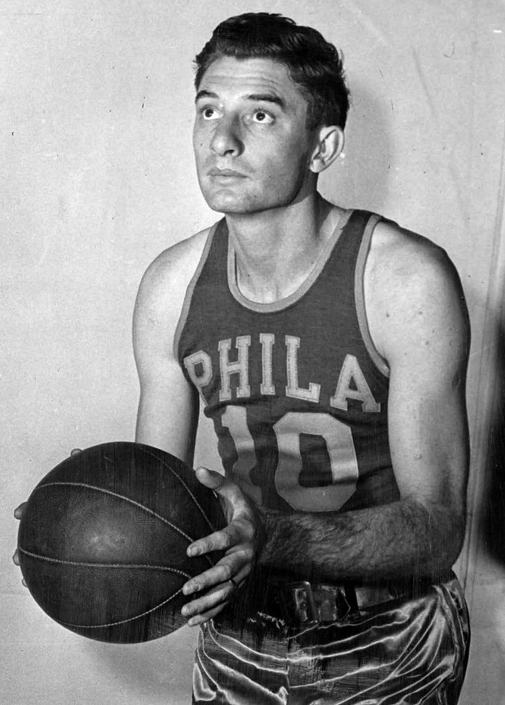
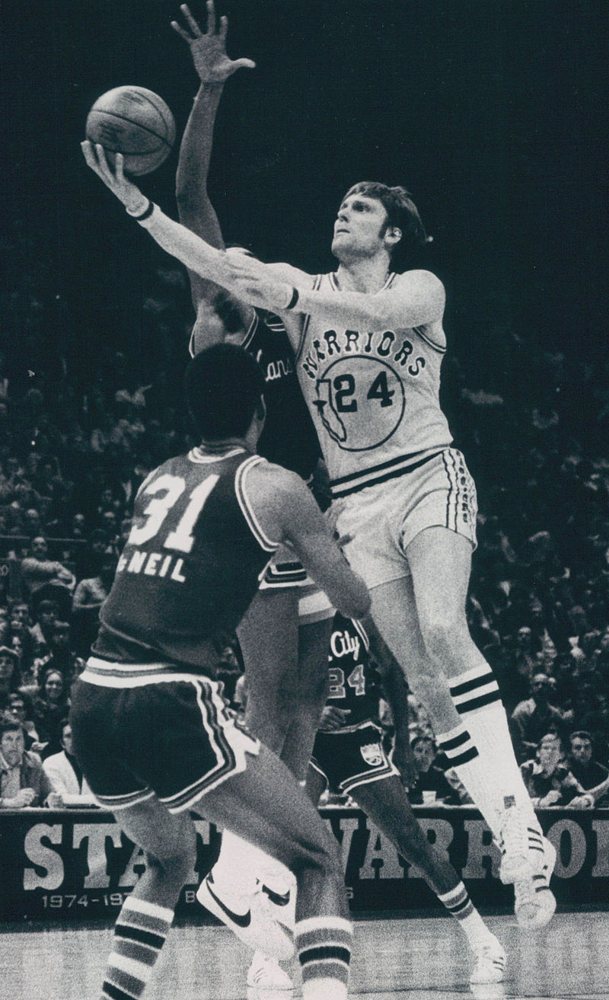
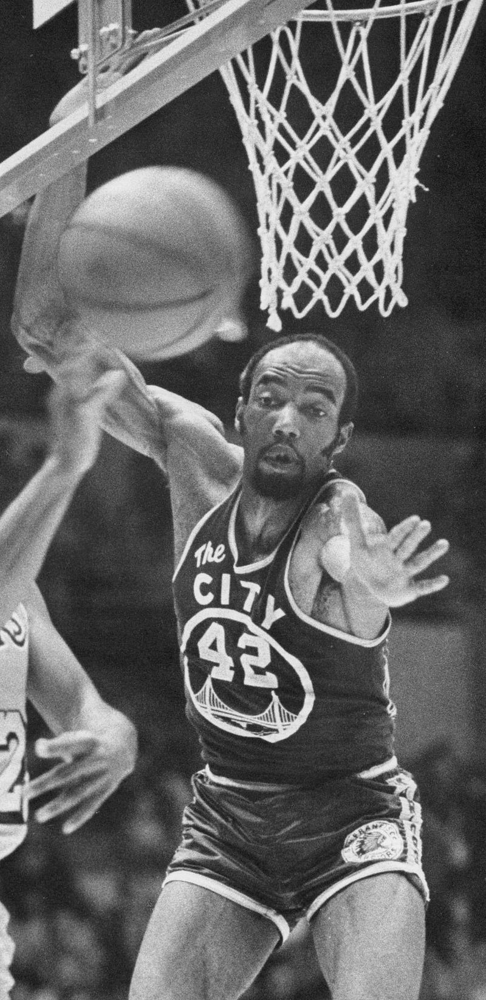
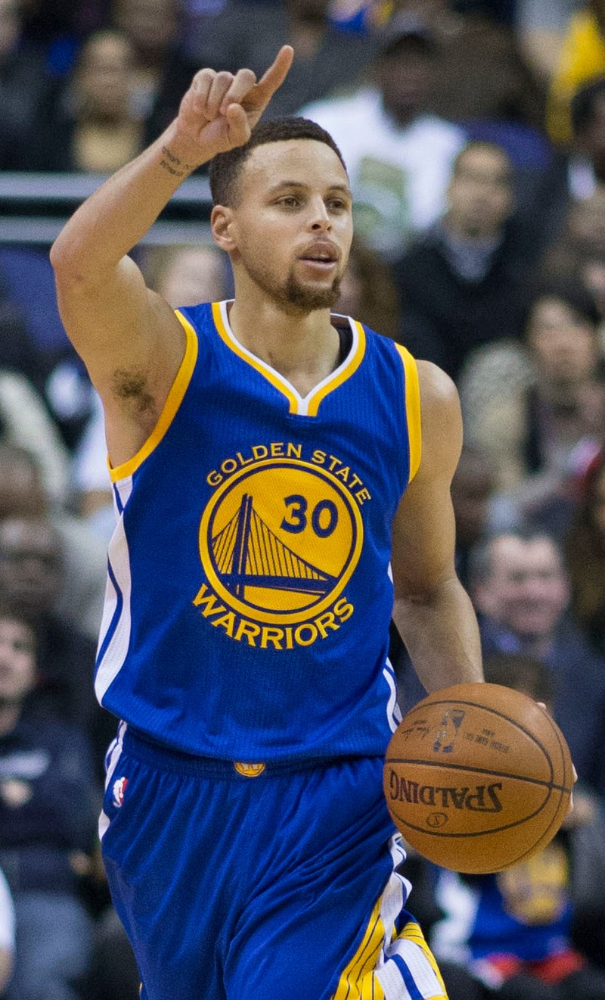
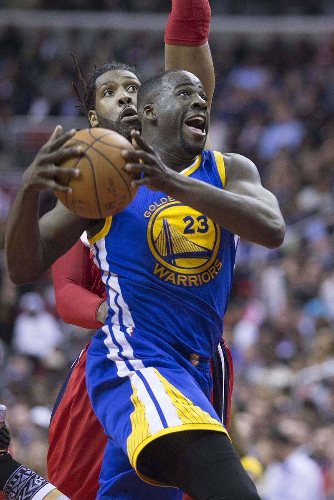
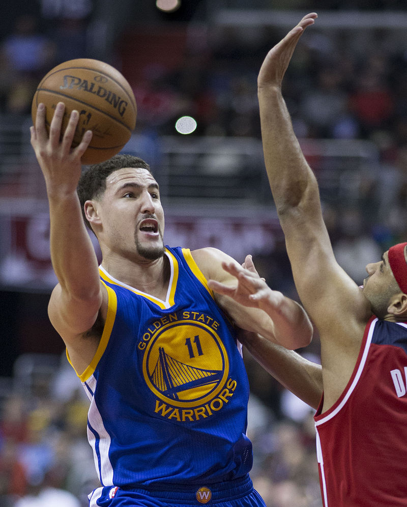

The Warriors were founded in 1946 as the Philadelphia Warriors, a charter member of the Basketball Association of America. They were owned by Peter A. Tyrrell, who also owned the Philadelphia Rockets of the American Hockey League. Tyrrell hired Eddie Gottlieb, a longtime basketball promoter in the Philadelphia area, as coach and general manager. The owners named the team after the Philadelphia Warriors, an old basketball team who played in the American Basketball League in 1925. Led by early scoring sensation Joe Fulks, the team won the championship in the league's inaugural 1946–47 season by defeating the Chicago Stags, four games to one. The NBA, which was created by a 1949 merger, officially recognizes that as its own first championship. Gottlieb bought the team in 1951. The Warriors won its next championship in Philadelphia in the 1955–56 season, defeating the Fort Wayne Pistons four games to one. The Warrior stars of this era were future Hall of Famers Paul Arizin, Tom Gola and Neil Johnston.
In 1965, they drafted Rick Barry in the first round who went on to become NBA Rookie of the Year that season and then led the Warriors to the NBA Finals in the 1966–67 season, losing (four games to two) to Chamberlain's new team that had replaced the Warriors in Philadelphia, the 76ers. Angered by management's failure to pay him certain incentive bonuses he felt were due him, Barry sat out the 1967–68 season and signed with the Oakland Oaks of the rival American Basketball Association for the following year, but after four seasons in the ABA rejoined the Warriors in 1972. During Barry's absence, the Warriors were no longer title contenders, and the mantle of leadership fell to Thurmond, Jeff Mullins and Rudy LaRusso. They began scheduling more home games in Oakland with the opening of the Oakland Coliseum Arena in 1966 and the 1970–71 season would be the team's last as the San Francisco Warriors. The franchise adopted its brand name Golden State Warriors prior to the 1971–72 season, to suggest that the team represented the entire state of California.[14][a] Almost all home games were played in Oakland that season; six were played in San Diego, but none in San Francisco or Daly City. Oakland Arena became the team's exclusive home court in 1971. The Warriors made the playoffs from 1971 to 1977 except in 1974, and won their first NBA championship on the West Coast in 1974–75. In what many consider the biggest upset in NBA history, Golden State not only defeated the heavily favored Washington Bullets but humiliated them in a four-game sweep. That team was coached by former Warrior Al Attles, and led on the court by Rick Barry and Jamaal Wilkes. Barry was named Finals MVP.[16] At 59–23, the Warriors had the league's best record during the 1975–76 season. They were upset, however, by the 42–40 Phoenix Suns in seven games in the Western Conference Finals.
Due of the loss of key players such as Barry, Wilkes and Thurmond to trades and retirements, the Warriors struggled to put a competitive team on the court from 1978 to 1987 after being one of the NBA's dominant teams in the 1960s and most of the 1970s. Through the NBA draft, however, they acquired some players such as high-scoring forward Purvis Short (1978), former Purdue center Joe Barry Carroll (1980) and center Robert Parish (1976), who was traded to the Boston Celtics in 1980 along with the draft pick that would become Kevin McHale for the pick used to draft Carroll. In 1983, the Warriors matched the New York Knicks' offer for free-agent Bernard King, but, unable to pay his high salary, quickly traded him to the Knicks for guard Micheal Ray Richardson, whom they soon shipped to New Jersey in exchange for former Georgetown Hoya point guard Eric "Sleepy" Floyd, and journeyman forward Mickey Johnson. Floyd once scored 29 points for the Warriors in the fourth quarter of a playoff game against the Lakers, though he was later traded to the Houston Rockets. The departure of these players for various reasons symbolized the franchise's futility during this period, as head coach Attles moved up to the front office as general manager in 1980 and the team made several coaching changes. New owners Jim Fitzgerald and Dan Finane finally managed to return the team to respectability by hiring former Cleveland Cavaliers head coach George Karl as head coach in 1986 after selecting St. John's small forward Chris Mullin in the 1985 NBA draft.
Longtime Seton Hall college coach P. J. Carlesimo, who had been recently fired by the Portland Trail Blazers, replaced Adelman as head coach for the 1997–98 season. Sprewell was suspended for the remainder of the season for losing his temper and choking Carlesimo during a team practice in December, generating the glaring newspaper headline "WARRIORS HIT ROCK BOTTOM" and the declaration by general manager Garry St. Jean that Sprewell would never play for the Warriors again. He would not play in the NBA again until he was dealt in January 1999 to the New York Knicks for John Starks, Chris Mills and Terry Cummings. St. Jean had become the new Warriors' general manager in July 1997; he and his predecessor Dave Twardzik received much of the blame for the Warriors' struggles early in Cohan's turbulent tenure as owner in addition to Cohan himself. St. Jean brought in players such as Terry Cummings, John Starks and Mookie Blaylock who were well past their primes. Twardzik drafted several flops, such as Todd Fuller (while Kobe Bryant was still available as well as Steve Nash and Jermaine O'Neal) and Steve Logan (who never played an NBA game). In the following draft, the team selected Adonal Foyle while Tracy McGrady was still available. St. Jean did, however, draft future two-time NBA slam dunk champion off-guard Jason Richardson (from Michigan State), a Warriors' star scorer through the 2006–07 season. For a few years, with rising stars Richardson, small forward Antawn Jamison and point guard Gilbert Arenas leading the team, the Warriors seemed like a team on the rise; but the young Warriors did not have enough in the competitive Western Conference to make the playoffs. After the 2002–03 season, St. Jean's earlier mistakes of committing money to players like Danny Fortson, Adonal Foyle and Erick Dampier were painfully felt by Warriors' fans when the team was unable to re-sign Arenas despite his desire to stay in the Bay Area. A new rule was implemented in response to second-round draft picks who quickly become superstars. Chris Mullin succeeded St. Jean with the title of Executive Vice President of Basketball Operations in 2004. He hoped to build a winning team around Jason Richardson, Mike Dunleavy Jr and Troy Murphy, and drafted 7-foot center Andris Biedriņš from Latvia (11th overall). At the 2005 trading deadline, he bolstered to the team with the acquisition of point guard Baron Davis, bringing to the team its first superstar since Mullin himself. The Warriors enjoyed a great start to the 2005–06 season, entering the new year with a plus .500 winning percentage for the first time since 1994, but managed to win only 13 more games through the end of March due to injuries. Davis often found himself at odds with new head coach Mike Montgomery (used to dealing with college players in his long tenure at Stanford) and failed to remain healthy, playing in just 54 games. On April 5, 2006, the Warriors were officially eliminated from playoff contention in a 114–109 overtime loss to the Hornets, extending their playoff drought to 12 seasons. Entering the 2006–07 season, the Warriors held the active record (12) for the most consecutive seasons without a playoff appearance (see Active NBA non-playoff appearance streaks). During the 2006 off-season, Golden State announced that it had bought out the remaining two years of coach Montgomery's contract and hired previous Golden State and former Dallas Mavericks coach Don Nelson to take over for him. During training camp, small forward Matt Barnes established himself in the rotation. On January 17, 2007, the Warriors traded the disappointing Murphy and Dunleavy with promising young power forward Ike Diogu and Keith McLeod to the Indiana Pacers for forward Al Harrington, forward/guard Stephen Jackson, guard Šarūnas Jasikevičius and forward Josh Powell.[20] This trade allowed the Warriors to "run and gun" their way to the playoffs with a more athletic and talented team. On March 4, 2007, the Warriors suffered a 106–107 loss in Washington, the Wizards handing them their 6th straight loss when former Warrior Arenas hit a technical free throw with less than one second remaining after Nelson had protested a controversial call with the Warriors ahead by a slim margin. The loss dropped them to 26–35. March 4 marked the turning point for the Warriors. The Warriors closed out the regular season (42–40) at 16–5 in their last 21 games. "We Believe" became the Warriors' slogan for the last two months of the season and the playoffs.
 The Warriors chose future superstar point guard Stephen Curry of Davidson College with the seventh overall pick in the 2009 NBA draft. During the 2009 off-season, Warrior ownership declined to renew the contract of general manager Chris Mullin. Larry Riley, Nelson's longtime assistant coach, was promoted in his place; Riley drafted Curry and traded Jamal Crawford to the Atlanta Hawks for Acie Law and Speedy Claxton. The Warriors' 2012 off-season moves changed the course of the franchise. In the 2012 draft, the Warriors selected small forward Harrison Barnes with the 7th overall pick, center Festus Ezeli with the 30th pick, small forward Draymond Green with the 35th pick, and 7-foot-1 center Ognjen Kuzmic with the 52nd pick. According to sportswriter Anthony Slater, in this draft, "Golden State got a starter [Barnes], a rotation player [Ezeli] and a transcendent talent that perfectly fit the small-ball direction of the league [Green]." In addition, Curry agreed to a four-year, $44 million rookie scale contract extension. At the time, many basketball writers considered the move risky for Golden State because of Curry's injury history. In 2016, however, Slater argued that Curry's relatively inexpensive contract paid "huge dividends" by freeing up the necessary funds to allow the team to "keep a strong core around him". The team made a series of other moves, trading Dorell Wright, obtaining point guard Jarrett Jack, and signing forward Carl Landry. ackson was fired as coach on May 6, 2014,[60] despite a unanimous declaration of support from his players and a three-year 121–109 (.526) record that marked a major turnaround and placed him fourth on the franchise's all-time wins list, trailing Alvin Attles (557), Don Nelson (422) and Eddie Gottlieb (263). Over the 17 years before Jackson took the helm in 2011, the franchise had averaged 30.2 wins per season and made the playoffs only once. Jackson became just the third Warriors head coach to notch at least 50 wins in a season, joining Nelson and Attles, who both hit the mark twice. On May 14, 2014, the Golden State Warriors signed Steve Kerr to a reported five-year, $25 million deal to become the team's new head coach.[64] It was the first head-coach job for Kerr, 48, a five-time NBA champion guard who set an all-time career record for accuracy in three-point shooting (.454). Kerr had served as president and general manager for the Phoenix Suns basketball team from 2007 to 2010, and had recently been working as an NBA broadcast analyst for Turner Network Television (TNT). The Warriors also signed point guard Shaun Livingston and guard Leandro Barbosa during the off-season. The Warriors completed the 2014–2015 regular season with a league-best record of 67–15, setting a Warriors record for wins. The team finished with a home record of 39–2, second-best in NBA history. The team ranked first in defensive efficiency for the season and second in offensive efficiency, barely missing the mark that the Julius Erving-led Sixers achieved by being first in both offensive and defensive efficiency. On May 4, Stephen Curry was named the 2014–15 NBA Most Valuable Player, the first Warrior since Wilt Chamberlain in 1960. 